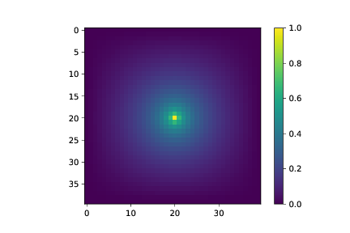
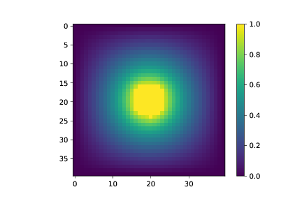
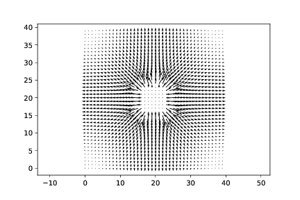
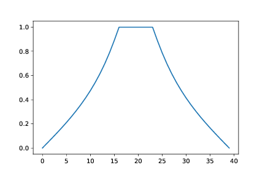

Vi løser Laplace likning numerisk i to dimensjoner med det følgende programmet:
import numpy as np
import matplotlib.pyplot as plt
from numba import jit
@jit
def solvepoisson(b,nrep):
# b = boundary conditions, =NaN where we will calculate the values
# nrep = number of iterations
# returns potential on the same grid as b
V = np.copy(b)
for i in range(len(V.flat)):
if (np.isnan(b.flat[i])):
V.flat[i] = 0.0
Vnew = np.copy(V) # See comment in text below
Lx = b.shape[0] # x-size of b matrix
Ly = b.shape[1] # y-size of b matrix
for n in range(nrep):
for ix in range(1,Lx-1):
for iy in range(1,Ly-1):
if (np.isnan(b[ix,iy])):
Vnew[ix,iy] = (V[ix-1,iy]+V[ix+1,iy]+V[ix,iy-1]+V[ix,iy+1])/4
else:
Vnew[ix,iy] = V[ix,iy]
V,Vnew = Vnew,V # Swap points to arrays V and Vnew
return V
Vi definerer grensebetingelsene i b-matrisen:
L = 40
b = np.zeros((L,L),float)
b[:] = np.float('nan')
b[0,:] = 0.0
b[L-1,:] = 0.0
b[:,0] = 1.0
b[:,L-1] = 0.0
plt.imshow(b)
Og så finner vi løsningen ved å kalle funksjonen solvepoisson:
nrep = 2000
V = solvepoisson(b,nrep)
plt.imshow(V)
plt.colorbar()
a) Hva blir løsningen hvis grensebetingelsen er \( V=0 \) på alle ytterkantene?
0
b) Hva blir løsningen hvis grensebetingelsene er \( V=0 \) på alle ytterkantene og \( V=1 \) i et punkt i midten?

c) Hva blir løsningen hvis grensebetingelsene er \( V=0 \) på alle ytterkantene og \( V=1 \) på en sirkel i midten med radius \( 3 \)?

d) Hvordan finner du det elektriske feltet fra potensialet? Plot det elektriske feltet i de tre tilfellene ovenfor.

e) Hvordan kan du finne det elektriske potensialet langs en linje langs \( x \)-aksen? Finn og plot det elektriske potensialet som funksjon av \( x \) for oppgave (b) og (c) ovenfor. Hva slags funksjonsform er det rimelig å sammenlikne med i dette tilfellet?

f) Din venn Q sier at han har funnet opp en genial måte å beskytte seg mot elektriske felt --- ved å sette seg inni i lukket overflate som har et konstant elektrisk potensiale. Stemmer dette? Bruk resultater du har funnet her til å argumentere for eller i mot dette. Hvordan tror du dette kan realiseres? (Vi skal se på dette i de neste ukene).